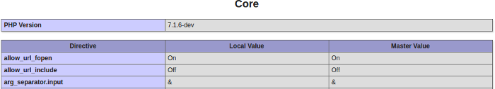

Объявление и использование настроек INI¶
В этой главе подробно рассматривается, как PHP работает со своей конфигурацией и как расширение должно подключаться к основному этапу конфигурирования PHP, регистрируя и используя настройки INI.
Напоминание о настройках INI¶
Прежде чем идти дальше, нужно вспомнить, как работают настройки INI и конфигурация PHP. Ниже перечислены шаги, ещё раз представленные как трактовка исходного кода. Этапы разбора INI-файлов PHP происходят в php_init_config(), а всё, что связано с INI, в основном происходит в Zend/zend_ini.c.
Сначала PHP пытается разобрать один или несколько INI-файлов. Эти файлы могут объявлять некоторые настройки, которые в дальнейшем могут оказаться релевантными, а могут и не оказаться. На этом самом раннем этапе (разбор INI-файлов) PHP ничего не знает о том, что ожидать в этих файлах. Он просто разбирает содержимое и сохраняет его для последующего использования.
Затем на втором этапе PHP запускает свои расширения, вызывая их MINIT(). Если нужно вспомнить о жизненном цикле
PHP, прочитайте соответствующую главу. MINIT() теперь может зарегистрировать нужные
настройки INI текущего расширения. При регистрации настройки движок проверяет, не разобрал ли он её определение
ранее, в рамках этапа разбора INI-файлов. Если это так, то настройка INI регистрируется в движке и получает
значение, разобранное из INI-файлов. Если определения в разобранных INI-файлах не было, то она регистрируется со
значением по умолчанию, которое разработчик расширения передал в API.
Note
Значение по умолчанию, которое получит настройка, определяется по результатам разбора INI-файлов. Если ничего не найдено, то значением по умолчанию становится то, что указал разработчик расширения, а не наоборот.
Значение по умолчанию, о котором мы здесь говорим, называется «master value» (основное значение). Вы могли
видеть его в выводе phpinfo(), не так ли?

Основное значение (master value) не может изменяться. Если во время запроса пользователь хочет изменить
конфигурацию, например, с помощью ini_set(), и если ему это разрешено, то изменённое значение станет
«локальным значением» (local value) — текущим значением для текущего запроса. В конце запроса движок
автоматически восстановит локальное значение до основного, тем самым сбрасывая его и забывая об изменениях,
сделанных во время запроса.
ini_get() считывает текущее локальное значение, привязанное к запросу, тогда как get_cfg_var() в любом
случае считывает основное значение.
Note
Если вы правильно поняли, get_cfg_var() вернёт false для любого запрошенного значения, которое не было
частью разбора INI-файла, даже если такое значение существует и было объявлено расширением.
И верно обратное: ini_get() вернёт false, если запрошена настройка, к которой ни одно расширение не
проявило интереса, даже если эта настройка была частью разбора INI-файла (например, php.ini).
Подробнее о настройках INI¶
Внутри движка настройка INI представлена структурой zend_ini_entry:
struct _zend_ini_entry {
zend_string *name;
int (*on_modify)(zend_ini_entry *entry, zend_string *new_value, void *mh_arg1, void *mh_arg2, void *mh_arg3,
int stage);
void *mh_arg1;
void *mh_arg2;
void *mh_arg3;
zend_string *value;
zend_string *orig_value;
void (*displayer)(zend_ini_entry *ini_entry, int type);
int modifiable;
int orig_modifiable;
int modified;
int module_number;
};
В этой структуре нет ничего сложного.
Поля настройки
nameиvalueиспользуются чаще всего. Обратите внимание, что значение — это строка (как zend_string *) и ничего более.Далее, как мы подробно рассмотрели во вступительной главе выше, мы находим поля
orig_value,orig_modified,modifiableиmodified, которые связаны с изменением значения настройки. Настройка должна хранить в памяти своё исходное значение (как «основное значение»).modifiableуказывает, можно ли изменять настройку, и должен принимать одно из значенийZEND_INI_USER,ZEND_INI_PERDIR,ZEND_INI_SYSTEMилиZEND_INI_ALL; они могут комбинироваться флагами, подробности описаны в руководстве по PHP.modifiedустанавливается в единицу каждый раз, когда настройка изменяется во время запроса, чтобы движок знал при завершении запроса, что должен восстановить значение этой настройки INI до основного значения для обработки следующего запроса.on_modify()— это обработчик, вызываемый каждый раз, когда значение текущей настройки изменяется, например, с помощью вызоваini_set()(но не только). Мы подробнее разберёмon_modify()позже, но пока считайте его функцией-валидатором (например, если настройка должна представлять целое число, вы можете проверять передаваемые значения на соответствие целым числам). Он также служит мостом в памяти для обновления глобальных значений, к этому мы тоже вернёмся позже.displayer()менее полезен, и обычно его не передают.displayer()отвечает за то, как отображается ваша настройка. Например, вы могли заметить, что PHP обычно отображает On для булевых значений true/yes/on/1 и так далее. Это и есть задачаdisplayer(): превратить текущее значение в «отображаемое» значение.
Вам также придётся иметь дело со структурой zend_ini_entry_def:
typedef struct _zend_ini_entry_def {
const char *name;
ZEND_INI_MH((*on_modify));
void *mh_arg1;
void *mh_arg2;
void *mh_arg3;
const char *value;
void (*displayer)(zend_ini_entry *ini_entry, int type);
int modifiable;
uint name_length;
uint value_length;
} zend_ini_entry_def;
Структура zend_ini_entry_def, во многом похожая на zend_ini_entry, используется программистом (то есть
вами) при регистрации настройки INI в движке. Движок считывает zend_ini_entry_def и создаёт внутри себя
zend_ini_entry для собственного использования, основываясь на предоставленной вами модели определения. Просто.
Регистрация и использование записей INI¶
Регистрация¶
Настройки INI сохраняются между запросами. Они могут менять своё значение во время выполнения запроса, но
возвращаются к исходному значению при завершении запроса. Поэтому регистрация настроек INI выполняется один раз и
навсегда, в хуке MINIT() вашего расширения.
Всё, что нужно сделать — это объявить вектор zend_ini_entry_def, и для этого вам помогут специальные макросы.
Затем вы регистрируете свой вектор в движке, и объявление готово. Рассмотрим это на примере из предыдущей главы о
выборе и угадывании случайного числа, снова показывая только значимые для нас сейчас части:
PHP_INI_BEGIN()
PHP_INI_ENTRY("pib.rnd_max", "100", PHP_INI_ALL, NULL)
PHP_INI_END()
PHP_MINIT_FUNCTION(pib)
{
REGISTER_INI_ENTRIES();
return SUCCESS;
}
PHP_MINFO_FUNCTION(pib)
{
DISPLAY_INI_ENTRIES();
}
PHP_MSHUTDOWN_FUNCTION(pib)
{
UNREGISTER_INI_ENTRIES();
return SUCCESS;
}
Это было самое простое объявление INI, мы не оставим его в таком виде, но шаги элементарны: вы объявляете вектор
zend_ini_entry_def[] с помощью макросов PHP_INI_BEGIN и PHP_INI_END. В середине вы добавляете отдельные
записи zend_ini_entry_def, тоже с помощью макросов. Мы использовали самый простой — PHP_INI_ENTRY(), который
принимает только четыре параметра: имя регистрируемой записи, её значение по умолчанию, если оно не было частью
разбора INI-файла (подробности см. в главе выше), уровень модификации — PHP_INI_ALL означает «везде». С
валидатором мы пока не играли и передали NULL.
В хуке MINIT мы используем макрос REGISTER_INI_ENTRIES, который выполняет описанную работу, тогда как его
противоположность UNREGISTER_INI_ENTRIES используется при завершении работы модуля для освобождения выделенных
ресурсов.
Теперь новая настройка INI «pib.rnd_max» объявлена — как PHP_INI_ALL — это означает, что пользователь может
изменить её значение с помощью ini_set() (и считать обратно с помощью ini_get()).
Мы не забыли отобразить эти настройки INI как часть информации о расширении, используя DISPLAY_INI_ENTRIES().
Если забыть это сделать при объявлении хука MINFO(), наши настройки INI окажутся скрыты от пользователя на
странице информации (phpinfo()). При необходимости обратитесь к главе об информации о расширении.
Использование¶
Со своей стороны как разработчику расширения, нам может потребоваться самостоятельно считывать значения настроек INI. Самый простой способ сделать это в расширении — использовать макросы, которые найдут значение в основном массиве, хранящем все настройки INI, и вернут его в виде запрошенного типа. В нашем распоряжении есть несколько макросов в зависимости от того, какой C-тип мы хотим получить обратно.
INI_INT(val), INI_FLT(val), INI_STR(val), INI_BOOL(val) — все четыре макроса ищут указанное значение
в массиве настроек INI и возвращают его (если найдено) с приведением к запрошенному типу.
Note
Помните, что в zend_ini_entry значение имеет тип zend_string. В нашем примере мы зарегистрировали
настройку INI типа ‘long’ — pib.rnd_max со значением по умолчанию 100. Но её значение регистрируется
в массиве настроек INI как zend_string, и поэтому каждый раз при считывании значения его нужно
приводить к типу ‘long’. Именно эту работу выполняет INI_INT().
Пример:
php_printf("The value is : %lu", INI_INT("pib.rnd_max"));
Note
Если значение не найдено, возвращается 0, поскольку мы запрашивали long. 0.0 было бы возвращено в том же случае, но при преобразовании в float, и так далее.
Если бы пользователь изменил настройку, а мы хотели бы отобразить «основное» исходное значение (в нашем случае:
100), то вместо INI_INT() мы использовали бы INI_ORIG_INT(). Разумеется, такие вариации макросов существуют
и для других типов.
Валидаторы и мост в памяти к глобальным переменным¶
Пока всё неплохо: регистрация и считывание значений настроек INI не так уж сложны. Но способ, которым мы использовали их в строках выше, далёк от оптимального.
Есть две проблемы, которые одновременно решаются использованием «продвинутого» API настроек INI:
Каждый раз, когда нужно считать наше значение, требуется поиск в основной таблице настроек INI, а также (часто) приведение к нужному типу. Эти операции стоят некоторого количества циклов CPU.
Мы не предоставили никакого валидатора, поэтому пользователь мог изменить нашу настройку и указать в качестве значения всё, что захочет.
Решение — использовать валидатор on_modify() и мост в памяти для обновления глобальной переменной.
Используя продвинутый API управления настройками INI, мы можем попросить движок зарегистрировать наши настройки обычным образом, но также можем указать ему обновлять выбранную нами глобальную переменную каждый раз, когда значение настройки INI изменяется. Таким образом, когда нам нужно будет считать наше значение обратно, достаточно будет прочитать нашу глобальную переменную. Это даст прирост производительности в случае, когда значение настройки INI требуется считывать часто, поскольку поиск в хеш-таблице и операция приведения типа больше не понадобятся.
Note
Чтобы продолжить читать эту главу, вам нужно хорошо понимать работу с глобальными переменными. Управление глобальным пространством рассматривается в отдельной главе.
Чтобы объявить мост в памяти к глобальной переменной, нам нужно создать глобальную переменную запроса и изменить способ объявления нашей настройки INI. Вот так:
ZEND_BEGIN_MODULE_GLOBALS(pib)
zend_ulong max_rnd;
ZEND_END_MODULE_GLOBALS(pib)
ZEND_DECLARE_MODULE_GLOBALS(pib)
PHP_INI_BEGIN()
STD_PHP_INI_ENTRY("pib.rnd_max", "100", PHP_INI_ALL, OnUpdateLongGEZero, max_rnd, zend_pib_globals, pib_globals)
PHP_INI_END()
PHP_MINIT_FUNCTION(pib)
{
REGISTER_INI_ENTRIES();
return SUCCESS;
}
Мы объявляем глобальную переменную max_rnd типа zend_ulong. Затем мы регистрируем нашу INI-настройку
‘pib.rnd_max’, на этот раз используя STD_PHP_INI_ENTRY(). Это позволяет передать макросу больше параметров.
Первые три нам уже известны, мы подробно разбирали их выше в главе.
Четыре последних параметра представляют мост к глобальным переменным. Мы указываем, что хотим обновлять max_rnd
в структуре zend_pib_globals, представленной символом pib_globals. Если не уверены в этом, прочитайте
главу об управлении глобальными переменными. Для краткого напоминания:
ZEND_BEGIN_MODULE_GLOBALS() объявляет структуру zend_pib_globals, а ZEND_DECLARE_MODULE_GLOBALS()
объявляет символ pib_globals такого типа.
Note
Внутри для вычисления смещения в байтах нашего члена max_rnd в структуре zend_pib_globals
используется offsetof, чтобы можно было обновлять эту область
памяти каждый раз при изменении ‘pib.rnd_max’.
Валидатор on_modify(), используемый здесь — onUpdateLongGEZero() — это стандартный валидатор, существующий
в PHP, который проверяет значение на соответствие long, большему или равному нулю. Валидатор необходим для
обновления глобальной переменной, поскольку именно эта работа выполняется внутри валидатора.
Теперь, чтобы считать значение нашей настройки INI обратно, нам нужно просто прочитать значение нашей глобальной
переменной max_rnd:
php_printf("The value is : %lu", PIB_G(max_rnd));
И мы закончили.
Теперь посмотрим на валидатор (обработчик on_modify()). У валидатора две цели:
Проверить переданное значение
Обновить глобальную переменную, если проверка прошла успешно
Валидатор вызывается только тогда, когда настройка INI устанавливается или изменяется (записывается), в любой момент, когда происходит этот шаг.
Warning
Если вы хотите, чтобы глобальная переменная обновлялась значением настройки INI, вам понадобится валидатор. Такой механизм не выполняется движком «магическим образом» — его нужно явно реализовать в валидаторе.
Посмотрим на исходный код onUpdateLongGEZero():
#define ZEND_INI_MH(name) int name(zend_ini_entry *entry, zend_string *new_value,
void *mh_arg1, void *mh_arg2, void *mh_arg3, int stage)
ZEND_API ZEND_INI_MH(OnUpdateLongGEZero)
{
zend_long *p, tmp;
#ifndef ZTS
char *base = (char *) mh_arg2;
#else
char *base;
base = (char *) ts_resource(*((int *) mh_arg2));
#endif
tmp = zend_atol(ZSTR_VAL(new_value), (int)ZSTR_LEN(new_value));
if (tmp < 0) {
return FAILURE;
}
p = (zend_long *) (base+(size_t) mh_arg1);
*p = tmp;
return SUCCESS;
}
Как видите, здесь нет ничего сложного. Вашему валидатору передаётся new_value, по которому он должен выполнить
проверку. Помните, что new_value имеет тип zend_string *.
onUpdateLongGEZero() принимает значение как long и проверяет, является ли оно положительным целым числом. Из
валидатора нужно возвращать SUCCESS, если всё прошло успешно, и FAILURE — если нет.
Далее идёт часть, обновляющая глобальную переменную. Переменные mh_arg используются для передачи любой
информации вашему валидатору.
Note
‘mh’ означает modify handler (обработчик изменения). Функции обратного вызова валидаторов также называют обработчиками изменения (modification handler callbacks).
mh_arg2 — это указатель на область памяти, представляющую начало памяти структуры вашей глобальной переменной,
в нашем случае — начало выделенной памяти pib_globals. Обратите внимание, что, поскольку речь идёт о памяти
глобальной переменной запроса, доступ к ней отличается в зависимости от того, используете вы режим ZTS или нет.
Больше информации о ZTS можно найти здесь.
В mh_arg1 передаётся вычисленное смещение вашего члена глобальной переменной (max_rnd в нашем случае), и вы
должны самостоятельно вычислить срез памяти, чтобы получить указатель на него. Именно поэтому мы сохранили
mh_arg2 как обобщённый указатель char * и привели mh_arg1 к size_t.
Затем вы просто обновляете содержимое проверенным значением, записывая его через указатель. mh_arg3 на самом
деле не используется.
Стандартными валидаторами PHP являются OnUpdateLongGEZero(), OnUpdateLong(), OnUpdateBool(),
OnUpdateReal(), OnUpdateString() и OnUpdateStringUnempty(). Их названия говорят сами за себя, как и их
исходный код (вы можете его прочитать).
По такой же модели мы можем разработать собственный валидатор, который, например, проверяет значение на соответствие положительному целому числу от 0 до 1000:
ZEND_INI_MH(onUpdateMaxRnd)
{
zend_long tmp;
zend_long *p;
#ifndef ZTS
char *base = (char *) mh_arg2;
#else
char *base;
base = (char *) ts_resource(*((int *) mh_arg2));
#endif
p = (zend_long *) (base+(size_t) mh_arg1);
tmp = zend_atol(ZSTR_VAL(new_value), (int)ZSTR_LEN(new_value));
if (tmp < 0 || tmp > 1000) {
return FAILURE;
}
*p = tmp;
return SUCCESS;
}
PHP_INI_BEGIN()
STD_PHP_INI_ENTRY("pib.rnd_max", "100", PHP_INI_ALL, onUpdateMaxRnd, max_rnd, zend_pib_globals, pib_globals)
PHP_INI_END()
Note
Записывать значение типа long в unsigned long безопасно, если диапазоны проверены, а именно это и делает валидатор.
Теперь, если пользователь хочет изменить настройку и передаёт неверное значение, не проходящее проверку,
ini_set() просто вернёт false в пользовательский код и не изменит значение:
ini_set('pib.rnd_max', 2048); /* returns false as 2048 is > 1000 */
В противоположном случае ini_set() возвращает старое значение и изменяет текущее значение. Новое переданное
значение становится текущим «локальным» значением, тогда как предыдущее значение по умолчанию остаётся «основным
значением». phpinfo() или ini_get_all() подробно показывают такие значения. Пример:
ini_set('pib.rnd_max', 500);
var_dump(ini_get_all('pib'));
/*
array(1) {
["pib.rnd_max"]=>
array(3) {
["global_value"]=>
string(3) "100"
["local_value"]=>
string(3) "500"
["access"]=>
int(7)
}
*/
Учтите, что ваша функция обратного вызова валидатора будет вызываться каждый раз при изменении значения, а изменяется оно несколько раз. Например, в нашем маленьком примере спроектированный нами валидатор вызывается три раза:
Один раз в
REGISTER_INI_ENTRY(), вMINIT(). Здесь мы устанавливаем значение по умолчанию для нашей настройки, и это делается с помощью нашего валидатора. Помните, что значение по умолчанию может приходить из разбора INI-файлов.Один раз на каждый пользовательский вызов
ini_set().Один раз в
RSHUTDOWN(), когда движок попытается восстановить локальное значение до основного, если значение было изменено во время текущего запроса. Пользовательская функцияini_restore()выполняет ту же работу.
Также учтите, что уровень доступа к значению проверяется в ini_set(). Если бы мы спроектировали настройку
PHP_INI_SYSTEM, пользователь не смог бы изменить её с помощью ini_set(), поскольку ini_set() использует
в качестве уровня доступа PHP_INI_USER. Несовпадение было бы обнаружено, и в этом случае движок не стал бы
вызывать валидатор.
Если вам нужно изменить значение настройки INI внутри вашего расширения во время выполнения, внутренний вызов —
zend_alter_ini_entry(), именно его использует пользовательская функция ini_set().
Использование displayer¶
Последнее, что нужно знать о настройках INI — это callback-функция displayer(). На практике она используется
реже, и срабатывает каждый раз, когда пользовательский код просит «вывести» значение вашей настройки INI, то есть
при использовании phpinfo() или php --ri.
Если вы не предоставите displayer, будет использован стандартный. Посмотрите:
> php -dextension=pib.so -dpib.rnd_max=120 --ri pib
Directive => Local Value => Master Value
pib.rnd_max => 120 => 120
Стандартный displayer берёт значение настройки INI (которое, напомним, имеет тип zend_string *), и просто
отображает его. Если значение не найдено или оно является пустой строкой, отображается строка “no value”.
Чтобы взять этот процесс под контроль, нам нужно объявить callback-функцию displayer(), которая будет
вызываться. Попробуем представить значение нашей ‘pib.rnd_max’ в виде процентной шкалы, из символов ‘#’ и ‘.’.
Просто пример:
#define ZEND_INI_DISP(name) void name(zend_ini_entry *ini_entry, int type)
ZEND_INI_DISP(MaxRnd)
{
char disp[100] = {0};
zend_ulong tmp = 0;
if (type == ZEND_INI_DISPLAY_ORIG && ini_entry->modified && ini_entry->orig_value) {
tmp = ZEND_STRTOUL(ZSTR_VAL(ini_entry->orig_value), NULL, 10);
} else if (ini_entry->value) {
tmp = ZEND_STRTOUL(ZSTR_VAL(ini_entry->value), NULL, 10);
}
tmp /= 10;
memset(disp, '#', tmp);
memset(disp + tmp, '.', 100 - tmp);
php_write(disp, 100);
}
PHP_INI_BEGIN()
STD_PHP_INI_ENTRY_EX("pib.rnd_max", "100", PHP_INI_ALL, onUpdateMaxRnd, max_rnd, zend_pib_globals,
pib_globals, MaxRnd)
PHP_INI_END()
На этот раз мы используем вариант макроса _EX() для объявления нашей настройки INI. Этот макрос принимает в
качестве последнего параметра функцию displayer. Используется STD_PHP_INI_ENTRY_EX().
Затем ZEND_INI_DISP() используется для объявления нашей функции displayer. Она получает в качестве аргумента
настройку INI, к которой она привязана, и значение, которое PHP просит отобразить: ZEND_INI_DISPLAY_ORIG
означает основное значение, а ZEND_INI_DISPLAY_ACTIVE означает текущее локальное значение, привязанное к
запросу.
Затем мы играем со значением и представляем его символами ‘#’ и ‘.’, что-то вроде этого:
ini_set('pib.rnd_max', 500);
phpinfo(INFO_MODULES);
Если мы вызовем это с помощью:
> php -dextension=pib.so /tmp/file.php
Тогда отображается:
pib
Directive => Local Value => Master Value
pib.rnd_max => ##################################################..................................................
=> ##########..........................................................................................
А если мы вызовем это с помощью:
> php -dextension=pib.so -dpib.rnd_max=10 /tmp/file.php
Тогда отображается:
pib
Directive => Local Value => Master Value
pib.rnd_max => ##################################################..................................................
=> ....................................................................................................
Поскольку PHP отображает и наше локальное, и основное значение, здесь наша callback-функция displayer будет вызвана
два раза. Локальное значение фактически представляет значение “500”, тогда как основное значение показывает жёстко
заданное значение по умолчанию “100”, если мы его не меняем, а если мы меняем его с помощью -d из php-cli, оно
фактически используется.
Если вы хотите использовать один из существующих displayer’ов PHP, вы можете использовать
zend_ini_boolean_displayer_cb(), zend_ini_color_displayer_cb() или display_link_numbers()